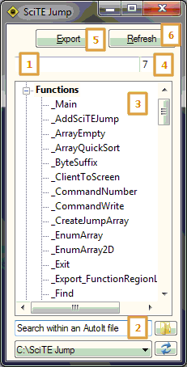
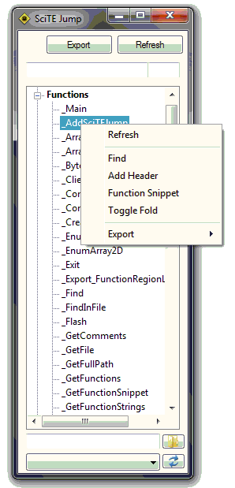

What is SciTE Jump?
SciTE Jump offers a quick and efficient way to jump between functions without having to scroll through an entire script to find the particular function you're looking for.
SciTE Jump comes with a host of additional features such as searching for a keyword within AutoIt files, exporting the functions to a list or convert AutoIt code to HTML syntax.
How do I get SciTE Jump?
SciTE Jump is available with the full version of SciTE4AutoIt3 therefore in SciTE you can either use the menu item <Tools - SciTE Jump> or the key combination Alt-Q
It is possible that a new version is available from the official site (SoftwareSpot) and has not been upcluded in SciTE4AutoIt3. if
this is the case, then download the latest version and select 'Yes' when asked if you would you like to upgrade.
How to use?
Note: Items in brackets reference the image number in the ScreenShots below.
Using SciTE Jump is very simple: select a function (3) to immediately navigate to the particular function in the script. If you wish to get back to the top of the script then select the item 'Functions'.
Search for functions (1) in the functions list or search within AutoIt files for a particular keyword (2) - useful if you have a lot of functions spread across many folders. To search for a keyword either select the folder button or
by dropping the folder onto SciTE Jump and then hit the 'Enter/Return' key - previous folders are saved in the dropdown menu. To get back to the default view select the 'Refresh' button (6).
Navigate to a certain line number in the script (4) by typing in the appropriate field, the line number is automatically jumped to whilst you type.
Selecting the export button (5) will allow you to save the script as another file format, for example a HTML or PDF file. It also allows you to get an overall view about your script. By selecting the option 'Function and Region
list' creates a file called FunctionList.txt in the same folder as the script. Included in this file is the following information:
· Script name
· Full path
· File size
· Line count
· CRC32 hash
· Used and unused functions
· Include files used
· Variables used within functions
· and much more...

To change the interface language or to restart both SciTE and SciTE Jump simply select the title bar icon.
The right-click menu can be accessed via right clicking on an item. Included in this menu is a host of additional options, these include copying a function to the clipboard the (Function Snippet) or to add a UDF style header to the
top of the function.

How do I report a bug?
If for any reason there is a problem running SciTE Jump then please submit a report to the following thread: SciTE Jump
When submitting a bug report, please ensure you've included the following details below as well as a short description detailing your problem.
· AutoIt version
· SciTE4AutoIt3 version
· SciTE Jump version
· Windows version
Under no circumstances should you report a bug on the official AutoIt tracker.